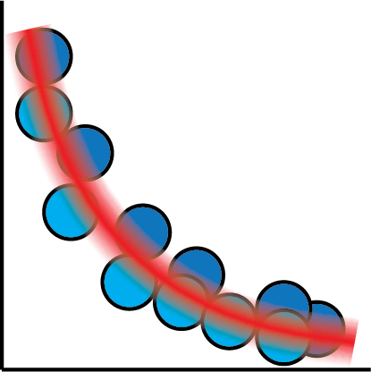
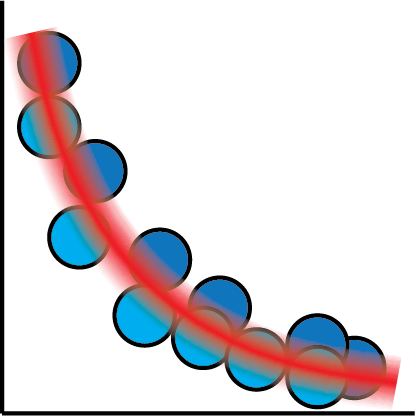

Fret Not, It's Curve Fitting All The Way Down!

"epiphanies in Bayes-land"
Eric J. Ma, Digility 2018
Follow Along!
ericmjl.github.io/curve-fitting-talk

About Myself
- Investigator, Scientific Data Analysis, NIBR
- MIT Biological Engineering, ScD, 2017
- Self-taught machine & deep learner, Bayesian Pythonista
Goals
- Demystify basic concepts in Bayesian statistical inference
- Using lots of pictures and minimal equations.
Estimation


import numpy as np
import pymc3 as pm
data = np.random.normal(loc=6, sd=2, size=1000)
with pm.Model() as model:
# Priors
sd = pm.Exponential('sd', lam=5)
mu = pm.Normal('mu', mu=0, sd=100)
# Likelihood for data
like = pm.Normal('like', mu=mu, sd=sd, observed=data)
Linear Regression


import pymc3 as pm
import numpy as np
x = np.random.normal(loc=0, sd=10, size=1000)
m = 10; c = 6;
y = m * x + c + np.random.normal(0, 0.2)
with pm.Model() as model:
# Priors
m = pm.Normal('m', loc=0, sd=100)
c = pm.Normal('c', loc=0, sd=100)
sd = pm.Exponential('sd', lam=5)
# Link function
mu = m * x + c
# Likelihood for data
like = pm.Normal('like', mu=mu, sd=sd, observed=y)
Logistic regression


import pymc3 as pm
import numpy as np
with pm.Model() as model:
# Priors
beta = pm.Normal('beta', mu=0, sd=100)
# Link function
p = 1 / (1 + beta * x)
# Likelihood for data
like = pm.Bernoulli('like', p=p, observed=data)
Parametric Curves

 



import pymc3 as pm
import numpy as np
with pm.Model() as model:
# Priors
A = pm.HalfNormal('A', sd=100)
b = pm.Normal('b', mu=0, sd=100)
C = pm.HalfNormal('C', sd=100)
sd = pm.Exponential('sd', lam=5)
# Link function
mu = A * tt.exp(-b * x) + C
# Likelihood for data
like = pm.Normal('like', mu=mu, lam=lam, observed=data)
Neural Networks


def nn(x):
w1 = pm.Normal('w1', mu=0, sd=1, shape=(x.shape[1], x.shape[1]))
b1 = pm.Normal('b1', mu=0, sd=1, shape=(x.shape[1]))
a1 = tt.tanh(tt.dot(x, w1) + b1)
w2 = pm.Normal('w2', mu=0, sd=1, shape=(x.shape[1], 1))
b2 = pm.Normal('b2', mu=0, sd=1, shape=(1,))
a2 = tt.tanh(tt.dot(a1, w2) + b2)
return a2
with pm.Model() as model:
mu = nn(x)
sd = pm.Exponential('sd', lam=5)
like = pm.Normal('like', mu=mu, sd=sd, observed=data)
But what exactly is a neural network?

Deep neural networks are nothing more than matrix transformations on input data.
They are nothing more than fancy curve fitters!
For more details and pretty pictures, check out another talk I did at PyData NYC 2017!
How can Bayesian methods can help you design more reasonably?
By "reasonably", we mean "in a way that doesn't violate common statistical sense".